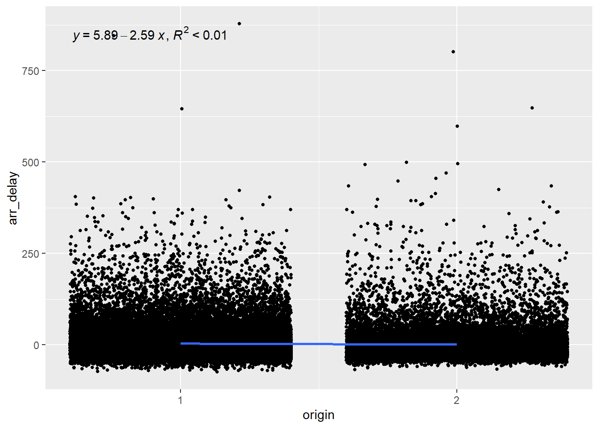

10 Linear regression
10.1 Introduction
In the previous chapter, we learned that regression is a method used to determine the relationship between a dependent variable (the variable we want to predict) and one or more independent variables (the predictors available to make the prediction). In the last chapter, we used logistic regression to predict a dichotomous variable. In this chapter we will learn how to use linear regression to predict a continuous dependent variable.
10.2 Linear regression
Linear regression uses a straight line to model the relationship between categorical or numerical predictors (independent variables) and a numerical predicted value (dependent variable). for a single predictor variable, the formula for the prediction is:
\[ y = intercept + slope × x \]
In statistical terms, the same formula is written like this:
\[ y = β_0 + βx \]
And if we have multiple independent variables, the formula becomes:
\[ y = β_0 + β_1x_1 + β_2x_2 .... β_nx_n \]
To determine how well the model fits the data (how well does x predict y. the linear model uses the square of the residuals (r2). The residuals are the difference between the predicted values and the real data, measured by the vertical distance between the line and the data points. Here’s a figure from Rhys (2020) to help you visualize this.

We can see in this figure that the intercept is where the line crosses the y-axis. The slope is calculated by dividing the difference in the predicted value of y by the difference in the value of x.
When working with categorical predictors, the intercept is the mean value of the base category, and the slope is the difference between the means of each category. Here’s an example taken again from Rhys (2020).

10.3 Building a linear regression model
Let’s use on-time data for all flights that departed NYC (i.e. JFK, LGA or EWR) in 2013 to try to build a model that will predicted delayed arrival. For this we will use the flights dataset included in the nycflights13 package. We will consider the following variables in our model:
origin: airport of departure (JFK, LGA, EWR)
carrier (we will only compare United Airlines - UA, and American Airlines - AA)
distance: flight distance in miles.
dep_delay: delay of departure in minutes
arr_delay: delay of arrival in minutes (this is our independent variable)
library(nycflights13)
data <- flights %>%
filter(carrier %in% c("UA", "AA")) %>%
select(origin, carrier, distance, dep_delay, arr_delay) %>%
mutate(origin = as_factor(origin),
carrier = as_factor(carrier)) %>%
drop_na()
head(data) %>%
kbl() %>%
kable_classic()| origin | carrier | distance | dep_delay | arr_delay |
|---|---|---|---|---|
| EWR | UA | 1400 | 2 | 11 |
| LGA | UA | 1416 | 4 | 20 |
| JFK | AA | 1089 | 2 | 33 |
| EWR | UA | 719 | -4 | 12 |
| LGA | AA | 733 | -2 | 8 |
| JFK | UA | 2475 | -2 | 7 |
10.4 Visualizing the relationship between the variables
We can explore the relationship between our independent variables and our independent variable. How we will approach this depends on the type of independent variables we have.
10.4.1 Continuous independent variables
For continuous independent variables, we do scatter plots with a fitted regression line. We can see in the plot below that there appears to be a linear relationship between the delay at departure and the delay at arrival (which is of course not so surprising). Here we used the stat_poly_line() and the stat_poly_eq() functions from the ggpmisc package to display the slope and the coefficient of determination (R2) of the regression line.
The coefficient of determination should not be mistaken for the square of residuals, even thought they have the same notation (R2). The coefficient of determination tells us how well the regression line fits the data. It’s value ranges from 0 to 1. An R2 of 0 means that the linear regression model doesn’t predict your dependent variable any better than just using the average, and a value of 1 indicates that the model perfectly predicts the exact value of the dependent variable.
Another way to interpret the coefficient of determination is to consider it as a measure of the variation in the dependent variable is explained (or determined) by the model. For instance, a R2 of 0.80 indicates that 80% of the variation in the dependent variable is explained by the model.
data %>%
ggplot() +
aes(dep_delay, arr_delay) +
stat_poly_line() +
stat_poly_eq(aes(label = paste(after_stat(eq.label),
after_stat(rr.label), sep = "*\", \"*"))) +
geom_point() +
geom_smooth(method="lm")We can see that the the linear regression model using considering only the departure delay explains 79% of the variation in the arrival delay. That makes dep_delay a good predictor in our model. On the other hand, the flight distance explains less then 1% of the arrival delays, as we can see in the next graph. This makes distance a very weak predictor of arrival delays.
10.4.1.1 Distance
data %>%
ggplot() +
aes(dep_delay, distance) +
stat_poly_line() +
stat_poly_eq(aes(label = paste(after_stat(eq.label),
after_stat(rr.label), sep = "*\", \"*"))) +
geom_point() +
geom_smooth(method="lm")
10.4.2 Categorical independent variables
To test the linear relationship between an categorical independent variable and the dependent variable, we use the same approach: a scatterplot with geom_smooth(). However, geom_smooth does not work with factors and requires numerical data. Therefore, we need to convert our factors into numerical variables to visualize the trend line with geom_smooth().
Also, when dealing with factors variables with more than two categories (factors with more than 2 levels), we need to choose a base level to which we will compare each of the other levels. In other words, all our graphs should display only two categories.
10.4.2.1 Carrier
The plot below shows that there is hardly any relationship between the carrier and the arrival delay, with the variable explaining less than 1% of the variation in arrival delays.
data %>%
mutate(carrier = as.numeric(carrier)) %>%
ggplot() +
aes(carrier, arr_delay) +
stat_poly_line() +
stat_poly_eq(aes(label = paste(after_stat(eq.label),
after_stat(rr.label), sep = "*\", \"*"))) +
scale_x_continuous(breaks = c(1,2)) +
geom_jitter(size = 1) +
geom_smooth(method="lm") 10.4.2.2 Origin
Since origin has three levels (EWR, LGA and JFK), we want to plot choose a base level and compare each other level to this one. Let’s see which level represents which airport.
levels(data$origin)[1] "EWR" "LGA" "JFK"So let’s choose level 1 (EWR) as our base and compare it with level 2 (LGA).
data %>%
mutate(origin = as.numeric(origin)) %>%
filter(origin %in% c(1,2)) %>%
ggplot() +
aes(origin, arr_delay) +
stat_poly_line() +
stat_poly_eq(aes(label = paste(after_stat(eq.label),
after_stat(rr.label), sep = "*\", \"*"))) +
scale_x_continuous(breaks = c(1,2)) +
geom_jitter(size = 1) +
geom_smooth(method="lm")
And then we compare level 1 (EWR) with level 3 (JFK).
data %>%
mutate(origin = as.numeric(origin)) %>%
filter(origin %in% c(1,3)) %>%
ggplot() +
aes(origin, arr_delay) +
stat_poly_line() +
stat_poly_eq(aes(label = paste(after_stat(eq.label),
after_stat(rr.label), sep = "*\", \"*"))) +
scale_x_continuous(breaks = c(1,3)) +
geom_jitter(size = 1) +
geom_smooth(method="lm")Again, we can see that the airport from which the flight takes off explains less than 1% of the arrival delays and is therefore a poor predictor.
10.5 Building the multiple linear regression model
The process to build the model is the same as the one we used for the logistic regression in the previous chapter. In fact, the process is simpler here because we do not need to convert the coefficient into odds ratios to make them easier to interpret. Let’s use the lm() function to build the model that predicts delay at arrival based on the distance of the flight, the carrier and the origin (we’ll leave the delay of departure out of the model for now).
model <- lm(arr_delay ~ distance + carrier + origin,
data = data)summary(model)$coefficients %>%
kbl() %>%
kable_classic()| Estimate | Std. Error | t value | Pr(>|t|) | |
|---|---|---|---|---|
| (Intercept) | 4.6299672 | 0.3577348 | 12.942455 | 0.0000000 |
| distance | -0.0007208 | 0.0002005 | -3.595645 | 0.0003238 |
| carrierAA | -3.6699113 | 0.3907133 | -9.392849 | 0.0000000 |
| originLGA | -0.7238011 | 0.4052653 | -1.785993 | 0.0741037 |
| originJFK | 1.6725192 | 0.4638028 | 3.606100 | 0.0003110 |
The estimate coefficient represents the slope of the linear trend line for each predictor, so we can plug these values into our linear equation.
\[ ArrDelay = 4.63 - 0.00distance - 3.67AA - 0.72LGA + 1.67JFK \]
We can see that most coefficients are statistically significant, which appears to indicate that they are good predictors, but let’s hold on for a minute before drawing too hasty conclusions. Look at the Adjusted R-squared (r2). It has a value of 0.001663, which is extremely small and indicate that the model explains less than 1% of the variance in delays. In other words, our model does not at all allow us to make predictions about delays. How can almost all predictors in a model be statistically significant and still be very bad predictors?
Statistically significant predictors in a model with low predictive value mostly occur when our data set or sample is too large. What’s a good sample size? a good rule of thumb is 10% of the total observations, with at least ten observations per variable in the model but no more than 1000 observations in total. Let’s do this again with a sample of 500 observations. As shown in the code below, we can use the sample_n() function to create a sample of a specific size that will be used in the lm() function.
model <- lm(arr_delay ~ distance + carrier + origin,
data = sample_n(data, 500))
summary(model)
Call:
lm(formula = arr_delay ~ distance + carrier + origin, data = sample_n(data,
500))
Residuals:
Min 1Q Median 3Q Max
-66.523 -20.923 -9.743 8.328 224.212
Coefficients:
Estimate Std. Error t value Pr(>|t|)
(Intercept) 4.801122 4.473600 1.073 0.2837
distance -0.001939 0.002469 -0.785 0.4327
carrierAA -11.192016 4.638969 -2.413 0.0162 *
originLGA 3.408138 4.707689 0.724 0.4694
originJFK 8.713014 5.472526 1.592 0.1120
---
Signif. codes: 0 '***' 0.001 '**' 0.01 '*' 0.05 '.' 0.1 ' ' 1
Residual standard error: 37.64 on 495 degrees of freedom
Multiple R-squared: 0.0122, Adjusted R-squared: 0.004216
F-statistic: 1.528 on 4 and 495 DF, p-value: 0.1927We see that the model still does a terrible job at predicting arrival delays, and that none of the predictors are statistically significant (at the p < 0.05 level).
10.5.0.1 Adding departure delay to the model
Finally, let’s add the departure delay to the model. We’ve seen in the figure above, in which we plotted the arrival delay against the departure delay, that our data points seemed to follow our trend line, so we can expect that adding this predictor will improve our model.
model <- lm(arr_delay ~ distance + carrier + origin + dep_delay,
data = sample_n(data, 500))
summary(model)
Call:
lm(formula = arr_delay ~ distance + carrier + origin + dep_delay,
data = sample_n(data, 500))
Residuals:
Min 1Q Median 3Q Max
-54.782 -12.876 -2.747 9.520 134.130
Coefficients:
Estimate Std. Error t value Pr(>|t|)
(Intercept) -9.378338 2.406519 -3.897 0.000111 ***
distance 0.001013 0.001358 0.746 0.456114
carrierAA -2.352048 2.542714 -0.925 0.355410
originLGA 1.040475 2.713885 0.383 0.701596
originJFK 1.085992 2.998460 0.362 0.717370
dep_delay 0.994484 0.028659 34.701 < 2e-16 ***
---
Signif. codes: 0 '***' 0.001 '**' 0.01 '*' 0.05 '.' 0.1 ' ' 1
Residual standard error: 20.5 on 494 degrees of freedom
Multiple R-squared: 0.7149, Adjusted R-squared: 0.712
F-statistic: 247.7 on 5 and 494 DF, p-value: < 2.2e-16We can see that when we consider the delay in the departure, we can more accurately predict the delay at arrival, with around 80% of the variance explained by our model!
10.6 Homework
For this week’s lab, your task is to complete lab 8 (the template is available on BrightSpace). In this lab, you will build a linear regression model on a dataset of your choice. I encourage you to use the dataset that you will be using for your individual project, if it contains a numerical variable that you can try to predict using other variables in your dataset.